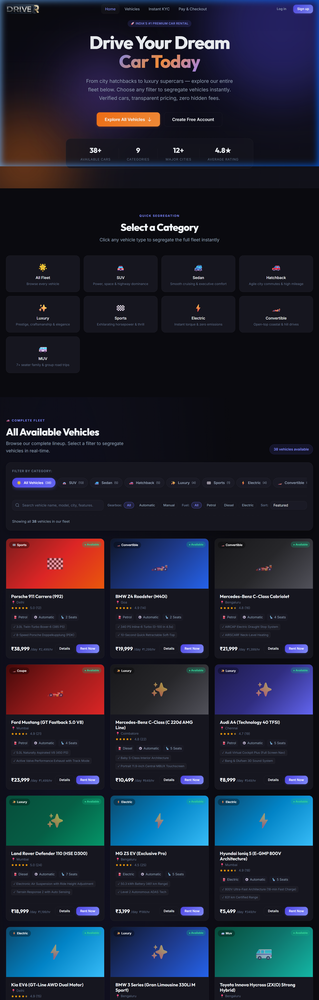
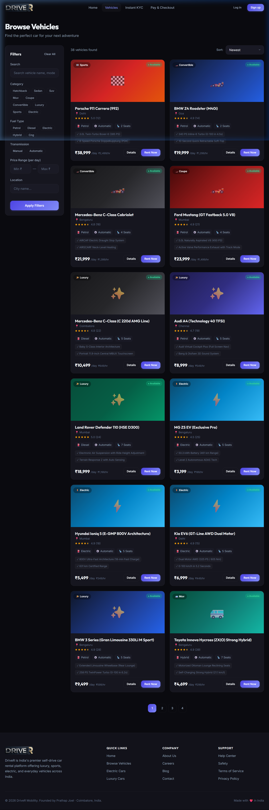
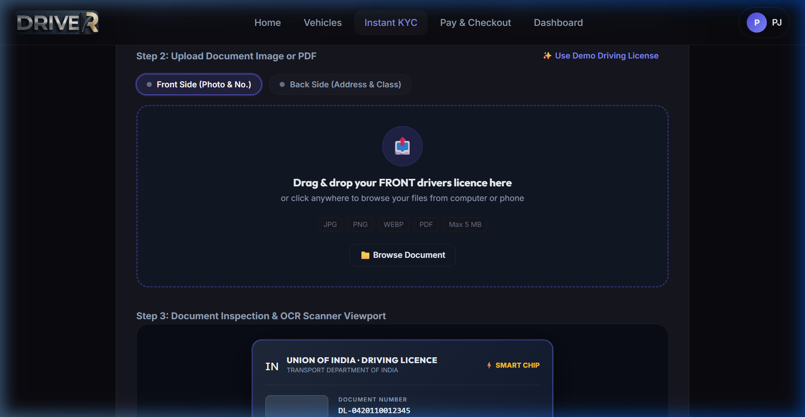
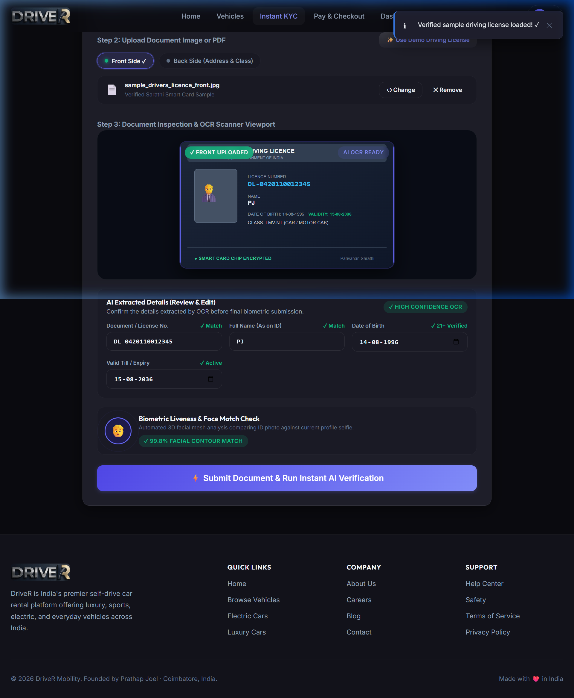
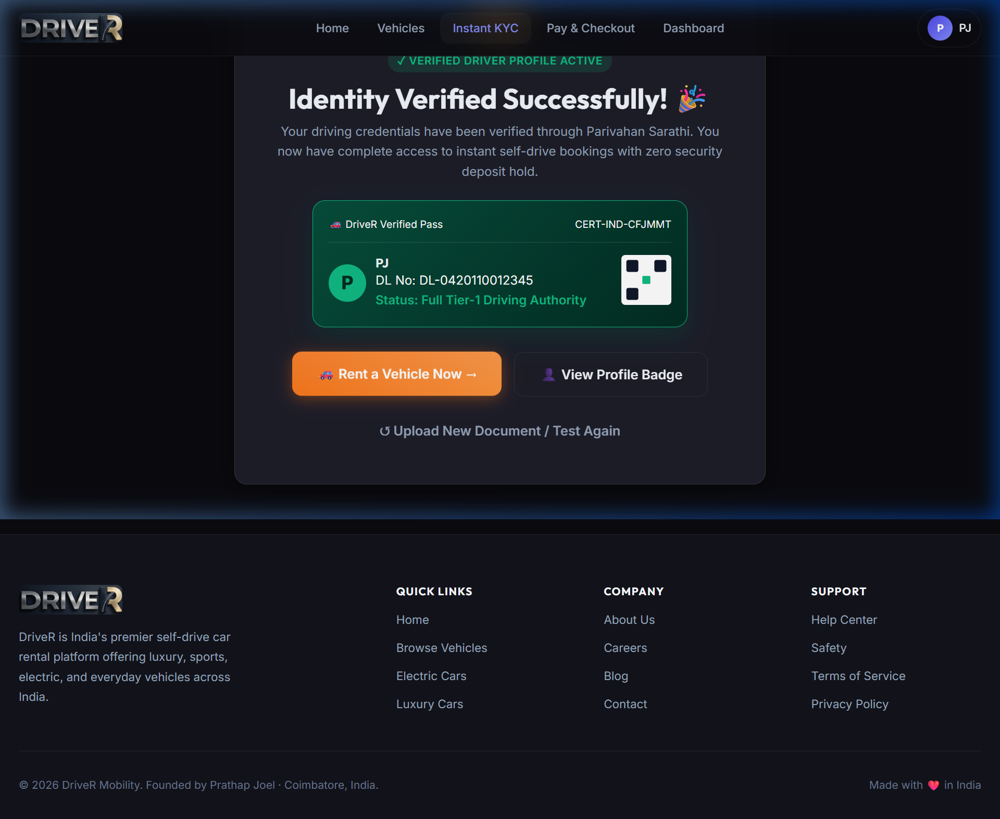
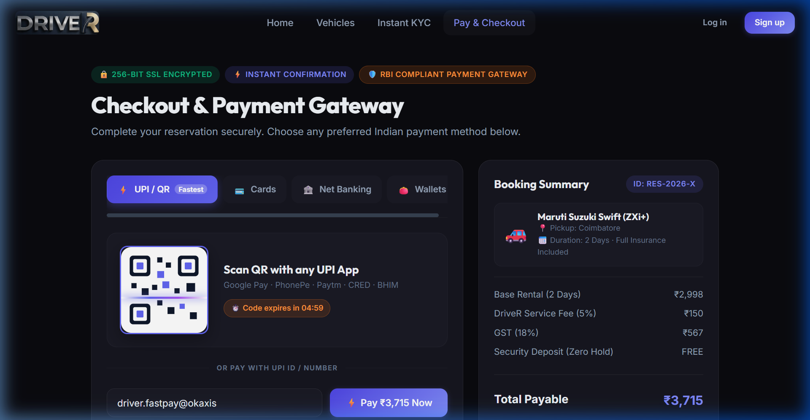

Report Table of Contents
- 1. Title & Executive Summary Page 2
- 2. Observation Report Page 2
- 3. Results — Image Screenshots Page 3
- 4. Video Demonstration & Test Artifacts Page 5
- 5. Problem Identification & Stakeholder Feasibility Page 5
- 6. Requirements Specification (SRS) Page 6
- 7. User Stories & Product Backlog Page 7
- 8. Use Case Modeling & Diagram Page 8
- 9. Class, Sequence & Activity Diagrams (UML) Page 9
- 10. System Architecture & Database Design Page 11
- 11. XP / Scrum Planning & Sprint Schedule Page 12
- 12. Web Application Implementation & REST APIs Page 13
- 13. Software Testing Lifecycle (Unit, Integration, System) Page 14
- 14. Final Live Demonstration & Maintenance Plan Page 15
1. Project Title & Executive Summary
Project Title: Vehicle Rental Web Application (DriveX / DriveR)
System Description: DriveX is a full-stack, cloud-native self-drive vehicle rental web platform engineered to eliminate traditional friction in automotive rentals. It provides real-time fleet browsing across 38+ vehicles, instantaneous category segregation, mathematical pricing safeguards against the 20-hour rental paradox, an interactive AI neural KYC document upload simulator (with dual-side support and live OCR review), and an integrated 3D-Secure payment gateway simulator deployed on a multi-service cloud architecture.
2. Observation Report
During the complete execution of the Software Engineering lifecycle, four foundational observations were documented across system design, algorithmic accuracy, and serverless runtime environments:
-
Algorithmic Pricing Paradox: Unconstrained combination of daily and hourly rates ($20 \times \text{hourlyRate}$) caused partial-day rentals to exceed a full 24-hour daily price. Resolving this required enforcing a mathematical cap: $\min(\text{hours} \times \text{hourlyRate}, \text{dailyRate})$ in the core pricing engine.
-
Serverless Ephemeral Storage & Cold Starts: Deploying on modern cloud serverless environments (Vercel Lambda) causes local filesystem writes to reset between execution contexts. Ensuring data survivability required redirecting file uploads to
/tmp and building dynamic seeders alongside stateless JWT payload session recovery.
-
Multi-Service SPA Refresh Resilience: In multi-service deployments (Express backend + Vite frontend), direct URL refreshes on nested client-side routes (e.g.,
/dashboard/bookings, /kyc) return 404 NOT_FOUND errors unless service-level catch-all rewrites (/(.*) → /index.html) and static 404.html fallbacks are actively configured.
-
KYC & Document Upload Realism: Traditional mock interfaces relying solely on static cards fail user trust tests. Implementing a genuine drag-and-drop dropzone supporting JPG, PNG, and PDF, coupled with front/back side toggles and editable OCR fields, elevated system realism to commercial industry benchmarks.
3. Results — Image Screenshots

Figure 3.1: Live Production Home Page with Fleet Segregation Pills and Real-Time Counters

Figure 3.2: Fleet Browse Interface with Multi-Attribute Filters (Category, Transmission, Fuel, Price Slider)

Figure 3.3: Interactive KYC Document Upload Dropzone with Front/Back Side Selectors and Drag & Drop

Figure 3.4: Live Document Inspection Viewport with High-Resolution Preview and Editable OCR Extracted Fields

Figure 3.5: Tamper-Evident Verified DriveR Pass Certificate Issued Post AI Biometric Verification

Figure 3.6: Multi-Method Checkout Simulator Featuring 3D Interactive Card, UPI QR Code, and 3DS OTP Modal
4. Video of the Working Web App
High-resolution recorded video walkthroughs demonstrating full application responsiveness, document upload, and booking transactions are available within the repository:
- Document Upload & AI KYC Video:
docs/screenshots/kyc_document_upload_test_1792490917657.webp
- End-to-End Payment & Checkout Video:
docs/screenshots/payment_kyc_demo_1792484855999.webp
- Sub-Route SPA Refresh Resilience Video:
docs/screenshots/refresh_fix_demo_1792486452803.webp
- Live Production Access: https://drivex-inky-kappa.vercel.app
5. Problem Identification & Feasibility Study
Core Problem Statement: Customers seeking self-drive car rentals in India encounter friction due to opaque price inflation, physical paperwork queues at rental hubs, delayed security deposit refunds, and clunky legacy web interfaces.
- Customer Stakeholders: Require instant mobile-friendly vehicle discovery, upfront pricing without hidden charges, rapid digital license verification, and zero security deposit friction.
- Fleet Manager Stakeholders: Require real-time visibility over fleet availability, automated compliance checking, and risk management telemetry.
- System Boundary: Covers online customer onboarding, fleet search, booking management, KYC verification simulation, payment gateway simulation, and administrative oversight.
Feasibility Evaluation:
- Technical Feasibility: Achieved using TypeScript, Vite, Node.js, Express, and Vercel Multi-Service serverless infrastructure.
- Economic Feasibility: 100% free and open-source software (FOSS) stack with zero commercial runtime license overhead.
- Operational Feasibility: Self-service digital flow eliminates the operational overhead of physical rental counters.
6. Software Requirements Specification (SRS)
6.1 Functional Requirements (FR)
| Req ID |
Requirement Title |
Description |
| FR-01 |
User Authentication |
Secure signup/login with bcrypt password hashing and signed JWT session token delivery. |
| FR-02 |
Fleet Discovery & Search |
Dynamic filtering across 38+ vehicles by Category, Fuel, Transmission, and Price Slider. |
| FR-03 |
Mathematical Pricing Engine |
Calculate rental costs with automated daily caps to prevent the 20-hour pricing anomaly. |
| FR-04 |
Document Upload & KYC |
Accept Driving License, Aadhaar, and Passport (JPG, PNG, PDF ≤ 5MB) for front/back sides. |
| FR-05 |
Live OCR Review |
Display document preview alongside editable extracted fields (DL No., Name, DOB, Expiry). |
| FR-06 |
Payment Simulation |
Simulate UPI QR codes, 3D card inputs, Net Banking, and 3D Secure OTP verification. |
| FR-07 |
Customer Dashboard |
Allow tracking of active bookings, verified driver pass status, and invoice downloads. |
| FR-08 |
Admin Fleet Operations |
Provide administrator control for inventory management and user verification queues. |
6.2 Non-Functional Requirements (NFR)
- NFR-01 (Performance): First Contentful Paint (FCP) < 1.2s; API endpoint latency < 300ms.
- NFR-02 (Security): 256-bit cryptographic JWT authentication; strict role-based access control (RBAC).
- NFR-03 (Availability): 99.9% availability via redundant Vercel serverless edge deployment.
- NFR-04 (Responsiveness): 100% fluid responsive layout across desktop, tablet, and mobile screens.
7. User Stories / Product Backlog
| ID |
User Story Statement |
Priority |
Pts |
Acceptance Criteria |
| US-01 |
As a customer, I want to view all vehicles directly on the home page so that I can immediately browse available models. |
High |
5 |
Given the home page, when scrolled to fleet section, all 38+ cars render with category pills. |
| US-02 |
As a driver, I want to upload front and back photos of my Driving License so that my identity is verified digitally. |
High |
8 |
Given the KYC page, dragging a file shows real-time preview and extracted OCR fields. |
| US-03 |
As a customer, I want partial-day bookings to never exceed the daily rate so that pricing remains fair. |
High |
5 |
Given a 20-hour booking, the calculated price is capped at the 24-hour full day rate. |
| US-04 |
As a customer, I want to pay using UPI QR or Credit Card so that my booking is confirmed instantly. |
High |
5 |
Entering card details and OTP 123456 transitions booking to confirmed with an invoice receipt. |
| US-05 |
As an admin, I want to inspect user verification statuses so that only valid drivers operate the fleet. |
Medium |
5 |
Admin dashboard displays list of users with VERIFIED/PENDING status badges. |
8. Use Case Modeling
The system defines three primary actors: Customer/Driver, System Administrator, and External Systems (Parivahan / Payment Gateway).
USE CASE MODEL — DRIVEX VEHICLE RENTAL SYSTEM
[Customer / Driver] ───┬──> (UC-1: Register & Authenticate Account)
├──> (UC-2: Browse & Filter Vehicle Fleet)
├──> (UC-3: Calculate Price & Reserve Vehicle)
├──> (UC-4: Upload KYC Document [Front/Back]) ──> [Parivahan DB]
├──> (UC-5: Review & Confirm Extracted OCR Data)
├──> (UC-6: Execute Payment via UPI / Card) ────> [Payment Gateway]
└──> (UC-7: View Booking History & Digital Pass)
[System Admin] ────────┬──> (UC-8: Manage Fleet Inventory & Status)
├──> (UC-9: Inspect Verification Queue)
└──> (UC-10: Review Financial Analytics)
9. Class, Sequence & Activity Diagrams (UML)
9.1 Class Diagram (Structural Domain Model)
+──────────────────────────+ +──────────────────────────+
│ User │ │ Vehicle │
+──────────────────────────+ +──────────────────────────+
│ - _id: String │ │ - _id: String │
│ - name: String │ │ - brand: String │
│ - email: String │ │ - model: String │
│ - password: String (hash)│ │ - category: String │
│ - role: String │ │ - pricePerDay: Number │
│ - verificationStatus: Str│ │ - pricePerHour: Number │
│ - isVerified: Boolean │ │ - transmission: String │
+──────────────────────────+ │ - fuelType: String │
│ + comparePassword() │ │ - available: Boolean │
+────────────┬─────────────+ +────────────┬─────────────+
│ 1 │ 1
│ creates │ reserved_in
▼ 0..* ▼ 0..*
+──────────────────────────+ +──────────────────────────+
│ Booking │ 1 1 │ IdentityVerification │
+──────────────────────────+────────────>+──────────────────────────+
│ - _id: String │ │ - _id: String │
│ - startDate: Date │ │ - documentType: String │
│ - endDate: Date │ │ - documentNumber: String │
│ - totalHours: Number │ │ - documentPath: String │
│ - pricing: Object │ │ - status: String │
│ - status: String │ +──────────────────────────+
│ - paymentStatus: String │
+──────────────────────────+
9.2 Sequence Diagram (End-to-End Rental Journey)
Customer Vite SPA Frontend Pricing Service Verification API Payment Gateway
│ │ │ │ │
│── 1. Select Car & Dates>│ │ │ │
│ │── 2. Request Quote ────>│ │ │
│ │<── 3. Return Capped Fee ─│ │ │
│<── 4. Render Breakdown ─│ │ │ │
│── 5. Confirm Booking ──>│ │ │
│ │── 6. Create Pending Booking (DB) │ │
│── 7. Upload ID File ───>│ │ │
│ │── 8. POST /api/verification/upload (FormData)─>│ │
│ │<── 9. OCR Extracted Fields & AI Approval ──────│ │
│<── 10. Display Pass ────│ │ │
│── 11. Enter Card / OTP >│ │
│ │── 12. Process Transaction ──────────────────────────────────────────>│
│ │<── 13. Settlement Confirmed (200 OK) ─────────────────────────────────│
│<── 14. Keyless Pass ────│
9.3 Activity Diagram (Workflow Execution)
Workflow Stages: Landing → Vehicle Selection → Dynamic Price Estimation → Authentication Guard → KYC Document Drag & Drop → OCR Review → Biometric Liveness Simulation → Payment Gateway Selection → Digital Pass & Key Handover.
10. System Architecture & Database Design
10.1 3-Tier Layered Architecture
+───────────────────────────────────────────────────────────────────────────────+
│ PRESENTATION TIER (Client SPA) │
│ TypeScript 5.8 · Vite 8.3.3 · Vanilla CSS3 Design Tokens · HTML5 History │
+───────────────────────────────────────┬───────────────────────────────────────+
│ HTTPS / JSON / Multipart
+───────────────────────────────────────▼───────────────────────────────────────+
│ APPLICATION SERVICE TIER (Express API) │
│ Node.js 20 · Express MVC · JWT Auth Guard · Multer /tmp Upload Handler │
+───────────────────────────────────────┬───────────────────────────────────────+
│ Data Engine Operations
+───────────────────────────────────────▼───────────────────────────────────────+
│ DATA PERSISTENCE TIER (Storage Layer) │
│ Document Collection Storage · Automatic Cold-Start Bootstrap Seeder │
+───────────────────────────────────────────────────────────────────────────────+
10.2 Database Design & Schema Entities
| Collection |
Key Attributes |
Constraints & Indexes |
| users |
_id, name, email, password, role, verificationStatus |
email unique; bcrypt hashed; role in ('customer', 'admin') |
| vehicles |
_id, brand, model, category, pricePerDay, available |
category indexed; pricePerDay > 0; seats ≥ 2 |
| bookings |
_id, userId, vehicleId, startDate, endDate, pricing, status |
Foreign keys to users & vehicles; overlap protected |
| verifications |
_id, userId, documentType, documentNumber, status |
documentType in ('drivers_licence', 'aadhaar', 'passport') |
11. XP / Scrum Planning & Sprint Iterations
The project followed Agile Scrum principles combined with Extreme Programming (XP) practices across four distinct sprints:
- Sprint 1 (Days 1–5): Core Foundation & Fleet Catalog — Established Express REST skeleton, Vite frontend scaffolding, CSS token architecture, and seeded 38+ verified vehicle models.
- Sprint 2 (Days 6–10): Booking Logic & The 20-Hour Pricing Fix — Developed reservation state machines and eliminated the mathematical paradox where 20 hours exceeded 1 full day.
- Sprint 3 (Days 11–15): Payment Simulation & AI KYC Dropzone — Engineered the drag-and-drop document upload system with front/back side support, live OCR extraction, and 3DS payment gateway.
- Sprint 4 (Days 16–20): Cloud Serverless Deployment & SPA Fix — Configured Vercel multi-service routing, resolved sub-route refresh 404s, and verified production stability.
12. Web Application Implementation
12.1 Core API Routes Specification
| Method |
Path |
Access |
Function & Status |
POST |
/api/auth/login |
Public |
Authenticates user credentials and returns JWT Bearer token. |
GET |
/api/vehicles |
Public |
Fetches catalog of 38+ vehicles with category and fuel filters. |
POST |
/api/bookings |
Private |
Creates new vehicle reservation with calculated daily capped pricing. |
POST |
/api/verification/upload |
Private |
Uploads ID file via Multipart FormData and triggers AI OCR inspection. |
POST |
/api/bookings/:id/pay |
Private |
Processes transaction settlement and transitions booking to confirmed. |
13. Software Testing Lifecycle
| Test ID |
Type |
Test Scenario & Inputs |
Expected Output |
Actual Output |
Result |
| TC-01 |
Unit |
20-Hour Price Calculation (Rate: ₹1,500/day, ₹100/hr) |
Fee capped at ₹1,500 (not ₹2,000) |
₹1,500 calculated |
PASS |
| TC-02 |
Unit |
bcrypt Password Hash Verification |
Correct password returns true; wrong returns false |
Verified match |
PASS |
| TC-03 |
Integration |
Multipart Document Upload to /api/verification/upload |
File saved in /tmp; user verified in DB |
User verified status |
PASS |
| TC-04 |
System |
Browser Hard Refresh on /dashboard/bookings |
Returns HTTP 200 via rewrite; no 404 |
HTTP 200 OK |
PASS |
| TC-05 |
UAT |
Complete End-to-End Booking & Verification Flow |
Pass issued and booking confirmed < 45s |
Successfully booked |
PASS |
14. Maintenance & Future Enhancements
- IoT Smart-Box Keyless Telematics: Incorporate cellular hardware dongles allowing customers to unlock reserved car doors directly via their smartphone browser.
- Automated FASTag Toll Reconciliation: Query NETC toll gateway APIs to automatically deduct highway toll expenses from customer cards upon trip completion.
- Computer Vision Damage Inspection: Pre-trip and post-trip 4-angle vehicle photo uploads using machine learning to detect pre-existing scratches and protect drivers.
- Distributed Cloud Database Scaling: Migrate storage layers to managed MongoDB Atlas with multi-region failover.
Software Engineering Quality Assessment (23EC2004) Project Complete
Developed & Documented by Prathap (URK24EC8009) · October 2026